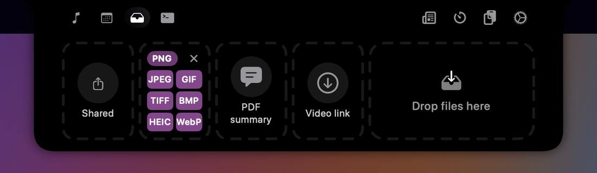
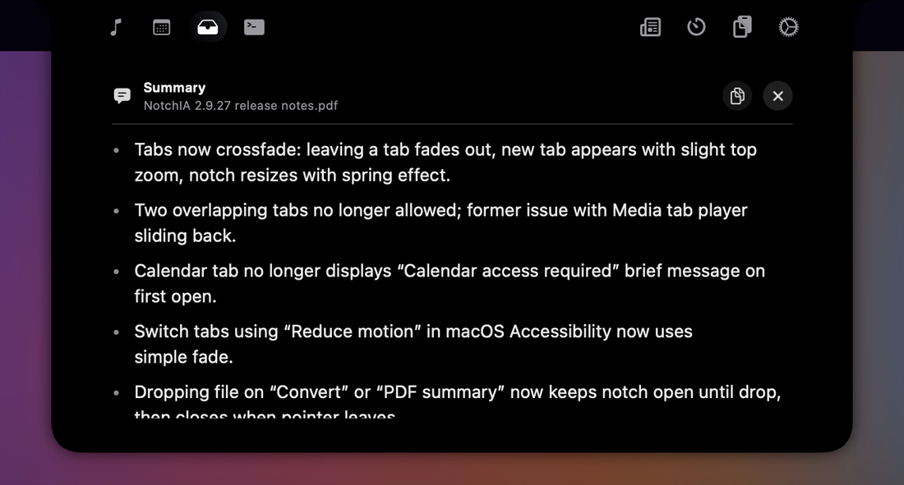

Notes de version · 2.9.27
Graceful Swan : des onglets qui s'enchaînent en douceur
Par NotchIA · 31 octobre 2026 · 3 min de lecture
La 2.9.27, publiée le 28 octobre 2026, soigne le changement d'onglet comme la 2.9.26 avait soigné l'ouverture de l'encoche : l'onglet quitté s'efface, puis le nouveau apparaît, sans que les deux se superposent. Elle répare aussi le dépôt de fichier sur les cartes « Convertir » et « Résumé PDF » de la Shelf, et supprime une alerte d'accès au calendrier qui s'affichait à tort.
Un fondu enchaîné entre les onglets
Changer d'onglet fait maintenant un fondu enchaîné. L'onglet quitté s'efface en un dixième de seconde environ, puis le nouveau apparaît en moins de trois dixièmes, avec un léger agrandissement depuis le haut. Pendant ce temps, l'encoche prend sa nouvelle taille avec le même ressort qu'à l'ouverture.
Jusqu'ici, deux onglets pouvaient se superposer un instant, et le lecteur de l'onglet Média glissait par-dessus les icônes quand on revenait dessus. Le rendu est désormais le même dans les deux sens, quel que soit l'ordre des onglets.
Si « Réduire les animations » est activé dans les réglages d'accessibilité de macOS, le changement d'onglet passe par un simple fondu.
Convertir et Résumé PDF : le dépôt fonctionne Pro
Déposer un fichier sur « Convertir » ou « Résumé PDF » refermait l'encoche une demi-seconde plus tard. Le fichier n'arrivait jamais sur la carte, et pouvait même finir sur le Bureau. L'encoche reste maintenant ouverte jusqu'au dépôt, puis se referme normalement quand la souris s'en va.
- « Convertir » accepte un nouveau fichier par-dessus le précédent, après une erreur comme après une conversion terminée.
- L'extension du fichier (PNG, JPEG…) ne s'affiche plus lettre par lettre, en colonne.
- « Résumé PDF » affiche le nom du fichier au lieu d'un identifiant technique.
- NotchIA ne se fige plus pendant la lecture d'un PDF scanné : la reconnaissance du texte (OCR), faite sur le Mac, tourne désormais en arrière-plan.


Pour rappel, « Convertir » fait passer images, PDF, audio et vidéo d'un format à l'autre, et « Résumé PDF » résume avec Apple Intelligence, sur l'appareil, un PDF ou un fichier texte (macOS 26 et plus récent).
Calendrier : plus de fausse alerte d'accès
À sa première ouverture après le lancement de NotchIA, l'onglet Calendrier affichait une fraction de seconde « Accès au calendrier requis », même quand l'accès était déjà accordé. L'autorisation est maintenant lue dès le démarrage de l'app, sans rien vous redemander.
Questions fréquentes
Le changement d'onglet respecte-t-il « Réduire les animations » ?
Oui. Si « Réduire les animations » est activé dans les réglages d'accessibilité de macOS, le changement d'onglet passe par un simple fondu.
J'ai déposé un fichier sur « Convertir » et il a disparu : où est-il ?
Probablement sur le Bureau. Avant la 2.9.27, l'encoche se refermait une demi-seconde après l'arrivée du fichier sur la carte : le dépôt n'aboutissait pas, et le fichier, lâché sur ce qui se trouvait sous l'encoche, pouvait être déplacé sur le Bureau par le Finder. Depuis la 2.9.27, l'encoche reste ouverte jusqu'au dépôt.
Le résumé fonctionne-t-il avec un PDF scanné ?
Oui. Quand un PDF ne contient pas de texte sélectionnable, NotchIA reconnaît le texte des pages (OCR) sur le Mac, puis le résume avec Apple Intelligence, sans envoyer le fichier sur un serveur. Depuis la 2.9.27, cette lecture se fait en arrière-plan et ne fige plus l'app. Le résumé demande macOS 26 ou plus récent.
Comment l'obtenir
Déjà utilisateur ? L'auto-update Sparkle vous propose la 2.9.27 automatiquement. Pour forcer : menu NotchIA → Vérifier les mises à jour.
Nouvel utilisateur ? brew install --cask coaxel2/notchia/notchia, ou le .dmg depuis la page d'installation.
L'auteur. L'auteur est développeur indépendant et créateur de NotchIA, app macOS qui transforme l'encoche du MacBook en centre de contrôle interactif. Ce changelog est rédigé à chaque release. Contact : notchia.app@gmail.com.